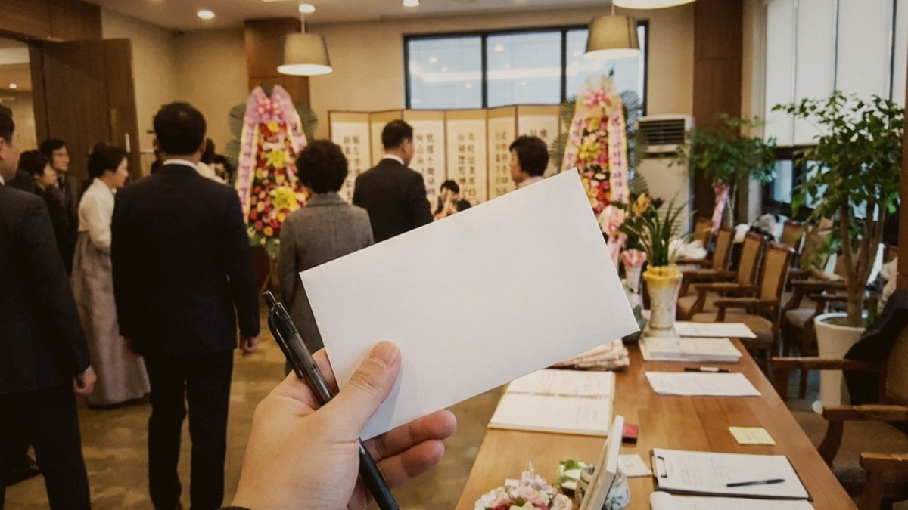
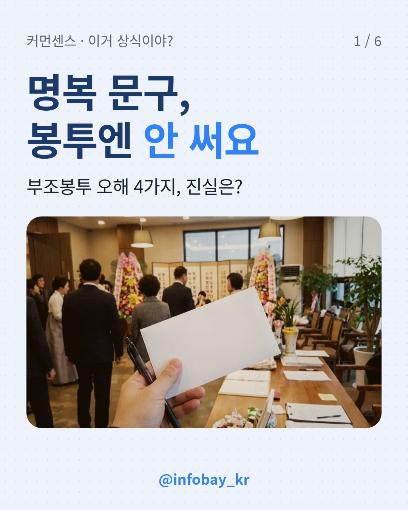
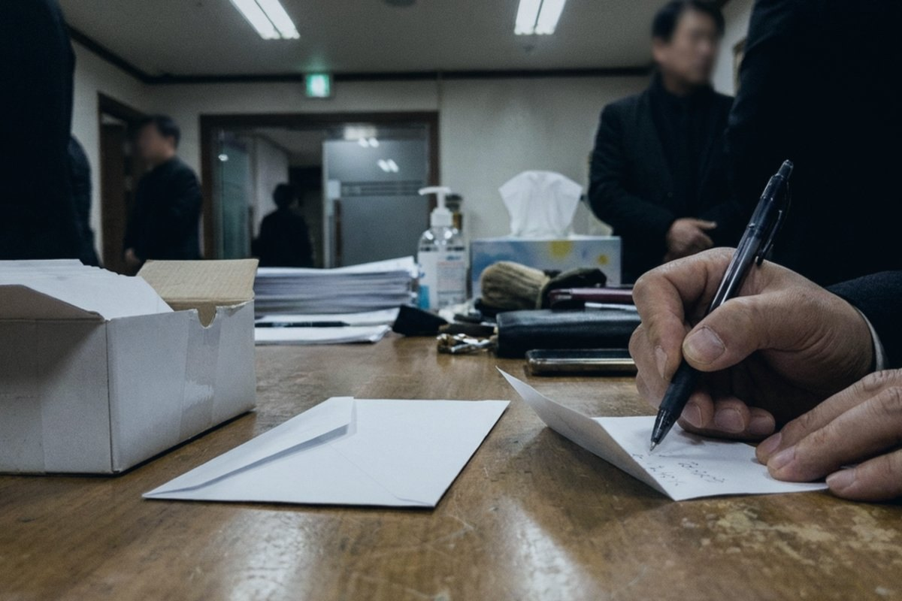
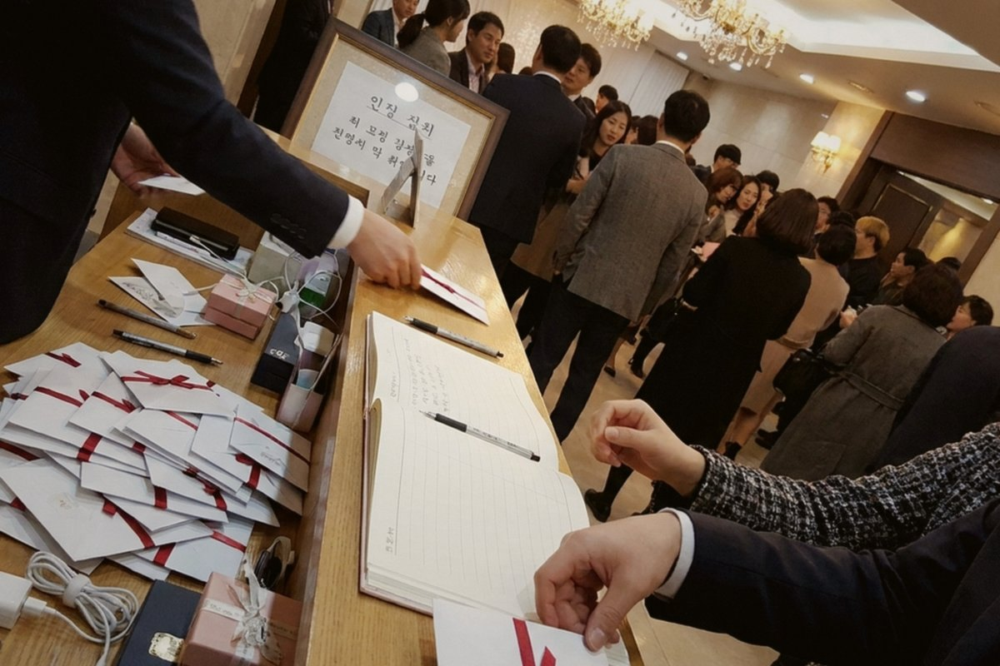

결혼식 접수대나 빈소 테이블에서 봉투 들고 펜이 멈췄다면 이 글이에요. 앞면엔 두세 글자, 이름은 뒷면 왼쪽 아래에 써요.
한 줄 결론: 앞면엔 축결혼(결혼식)이나 부의(장례식)만 쓰고, 이름은 뒷면 왼쪽 아래에 세로로 써요. '삼가 고인의 명복을 빕니다' 같은 문장은 봉투 대신 안에 넣는 속지(단자)에 적어요.

부조봉투 앞면엔 무슨 일인지 알리는 두세 글자만 써요. '부조(扶助)'라는 말 자체는 보통 앞면에 쓰지 않아요. 국립국어원은 장례(초상)에는 '부의(賻儀)'가 가장 일반적이고 '근조(謹弔)'도 쓴다고 답했어요. 돌아가신 지 1년, 2년 되는 제사(소상·대상)에는 '전의(奠儀)'나 '향촉대(香燭代)'를 쓰면 된다고 했고요.
| 상황 | 앞면 문구 | 참고 |
|---|---|---|
| 결혼식 | 祝結婚(축결혼), 祝華婚(축화혼), 祝婚姻(축혼인) | 한글로 써도 괜찮아요 |
| 장례식(초상) | 賻儀(부의), 謹弔(근조) | 부의가 가장 일반적 |
| 1주기·2주기 제사 | 奠儀(전의), 香燭代(향촉대) | 국립국어원 답변 |
한자가 자신 없으면 한글로 써도 결례가 아니에요. 식장이나 빈소에 놓인 봉투엔 문구가 미리 인쇄된 경우가 많아요. 그럴 땐 앞면은 건드리지 마세요.
이름은 뒷면 왼쪽 아래에 세로로 써요. 축의금 봉투도 조의금 봉투도 똑같아요. 회사나 모임 이름은 이름 오른쪽 위에 조금 작게 적어요. 같은 회사에 동명이인이 있으면 소속은 꼭 붙여 주세요. 나중에 받는 쪽이 명부를 정리할 때 누가 냈는지 알아보기 쉬워요.
여럿이 함께 내면 '홍길동 외 일동'이나 '○○회사 임직원 일동'처럼 써요.

꼭 지켜야 하는 규칙은 아니에요. 인터넷엔 '축결혼은 신랑 측, 축화혼은 신부 측'이라는 설명이 많아요. 그런데 이걸 모든 결혼식에서 지켜야 할 예절로 볼 필요는 없다는 안내도 있어요. 헷갈리면 가장 흔한 축결혼, 양쪽에 다 쓰는 축혼인을 고르면 무난해요.
봉투에 문장을 쓰면 어색하다는 게 국립국어원 답변이에요. 이런 인사말은 속지에 써요. 속지는 '단자(單子)'라고 부르는데 무엇을 얼마나 부조하는지 적는 흰 종이예요. 국립국어원은 봉투만 내는 것보다 단자를 넣는 게 예의에 더 맞다고 했어요.
단자 쓰는법은 이래요.

아래 다섯 가지는 접수대에서 자주 보이는 실수예요.
| ✕ 이렇게 하면 | ○ 이렇게 |
|---|---|
| 결혼식에 '근조·부의'가 인쇄된 봉투 | 사거나 집기 전에 앞면 확인 |
| 앞면에 내 이름 | 뒷면 왼쪽 아래 |
| 봉투에 '삼가 고인의 명복을 빕니다' | 봉투엔 부의, 문장은 단자에 |
| 단자에 '일금 ○원 정' | '금 ○원' |
| 이름 없이 돈만 | 이름, 필요하면 소속까지 |
한계도 있어요. 이름 위치는 법이 아니라 지금 가장 널리 쓰는 관행이에요. 앞면에 '부의'와 이름을 함께 쓰고 뒷면에 주소를 적는 지역도 있어요. 이미 오른쪽에 썼더라도 누군지 알아볼 수 있으면 다시 쓰지 않아도 돼요.

Q. 계좌로 보낼 땐 뭐라고 적어요?
받는 분 표기에 'OOO 부의'처럼 이름과 문구를 함께 적으면 돼요. 계좌번호가 맞는지 먼저 확인하세요.
Q. 한자 대신 한글로 써도 돼요?
돼요. 앞면을 '부의'나 '축결혼' 한글로 써도 결례가 아니에요.
Q. 금액은 얼마가 적당해요?
금액 기준은 따로 정리했어요. 축의금 얼마? 평균 11만7천원인데 제일 많이 낸 금액은 5만원, 조의금 5만원 vs 10만원? 설문 1위와 성균관 권고가 다른 이유를 보세요.
다음 경조사 전에 위 체크리스트를 휴대폰에 저장해 두세요. 빈소에 간다면 장례식 조문 예절 실수 6가지, 절은 영정 2번·상주 1번도 이어서 읽어 보세요.
이 상황, 당신은? 봉투에 '삼가 고인의 명복을 빕니다' 문장으로 써도 괜찮다 vs 두 글자만 써야 한다, 커먼센스에서 투표해 보세요.
2026년 11월 기준, 국립국어원 답변과 예절 안내 자료를 확인해 작성했어요.